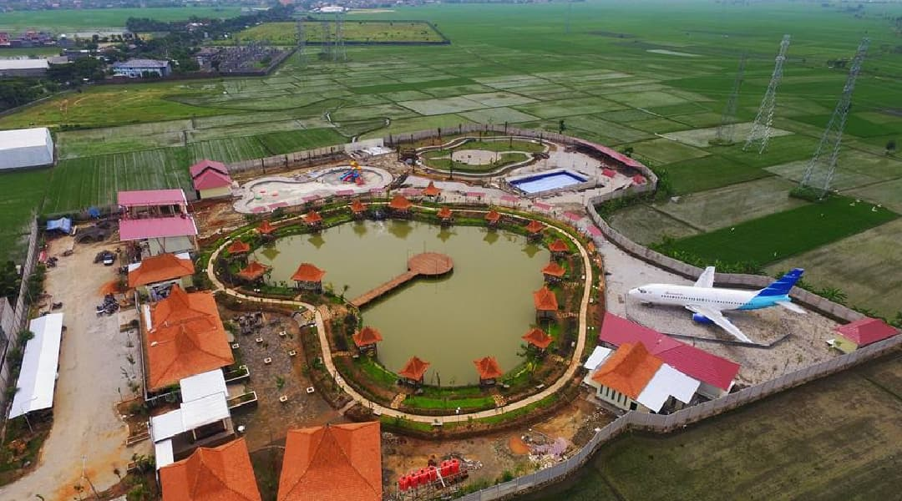
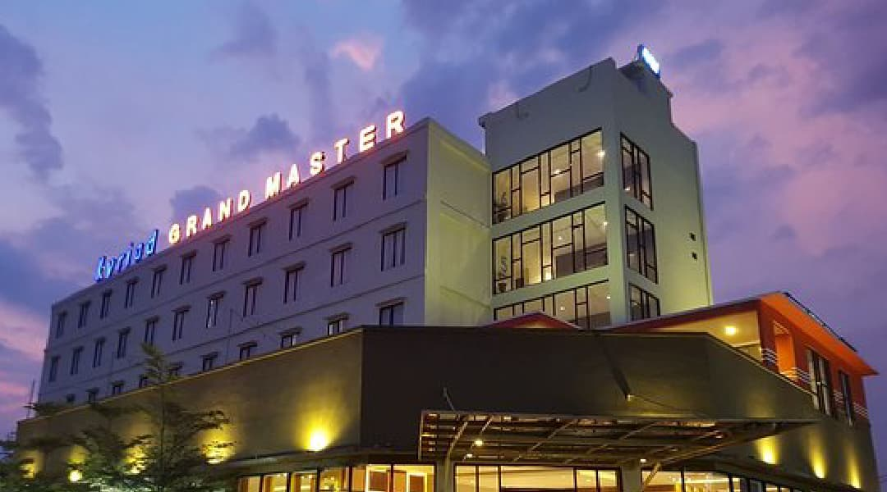
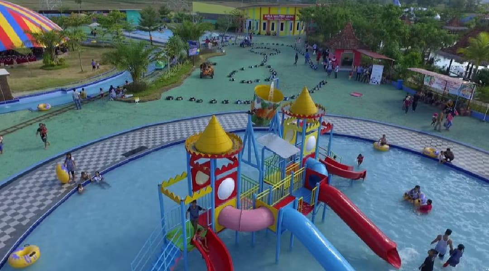
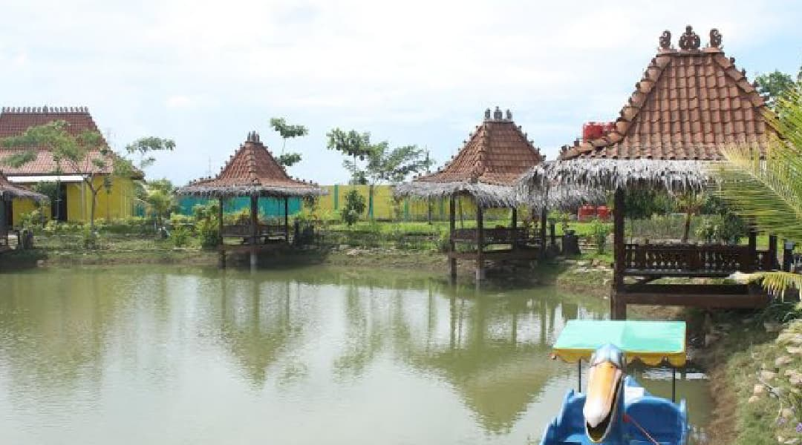

Master Park adalah wisata Purwodadi yang menyajikan wahana air (waterpark, waterboom), dan wisasata pesawat dalam satu lokasi yang sama. Master Park juga menyajikan konsep wisata edukatif kepada setiap pengunjung yang datang. Dengan demikian objek wisata tersebut sangat recommended masuk ke dalam list rencana liburan anda bersama keluarga di akhir pekan ini. Dari sekian banyak artikel wisata yang pernah diposting oleh penulis terkait tema wisata kolam renang, maka bisa diambil beberapa alasan kenapa waterpark, atau waterboom selalu ramai dikunjungi wisatawan. Di antaranya: Sebagian besar lokasi wisatanya strategis, dekat pusat kota, dan bisa diakses oleh semua jenis kendaraan. Tidak perlu bersusah payah melakukan trekking. Cocok untuk semua usia, dan semua kalangan (Wisata Keluarga). Selain menyajikan keseruan, di sisi lain juga sangat bermanfaat untuk kesehatan. Jika di objek wisata kolam renang terdapat sebuah pesawat terbang, tentu saja akan semakin menarik perhatian para pengunjung.
| Nama Tempat | master park |
| Alamat | Jl. Gajah Mada, Area Sawah, Kuripan, Kec. Purwodadi, Kabupaten Grobogan, Jawa Tengah. |
| fasilitas | area parkir, toilet, spot selfie, aula pertemuan, hotel, kolam air, taman bermain, mushola, restoran. |
| harga tiket | rp. 18.000,00 |
| jam buka | setiap hari 08.00-18.00 WIB |
| kontak | 089 507 781 675 |